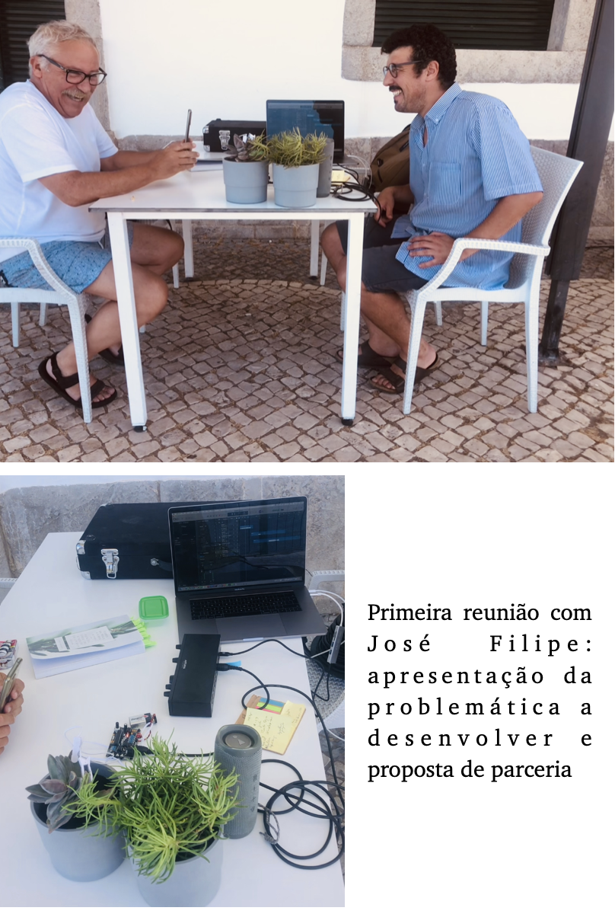
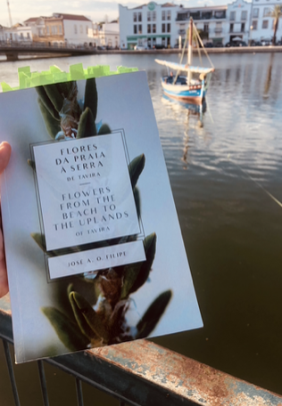
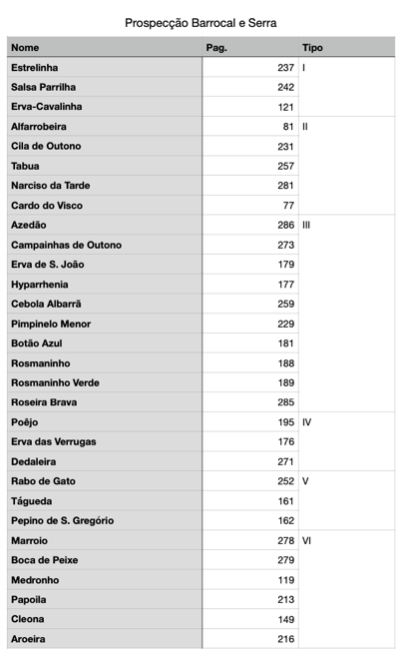

<!DOCTYPE html>
<html lang="pt">
<head>
  <meta charset="UTF-8" />
  <meta name="viewport" content="width=device-width, initial-scale=1" />
  <title>Biodata em Sintonia : Trombone e Flora</title>
  <style>
    * { margin: 0; padding: 0; box-sizing: border-box; }
    body {
  font-family: 'Segoe UI', Tahoma, Geneva, Verdana, sans-serif;
  background: url('imagens/fluorescent-plant-bg-01.png') no-repeat center center fixed;
  background-size: cover;
  color: #f0f0f0;
  line-height: 1.6;
}
    header {
  background: rgba(0, 0, 0, 0.7);
  color: #aaffcc;
  padding: 2rem 1rem;
  text-align: center;
}
    header h1 { font-size: 2.5rem; margin-bottom: 0.5rem; }
    header p { font-style: italic; font-size: 1.2rem; color: #c9d6c1; }
    section { max-width: 900px; margin: 3rem auto; padding: 0 1rem; }
    section h2 {
  color: #80ffea;
  margin-bottom: 1rem;
  border-bottom: 2px solid #80ffea;
  padding-bottom: 0.3rem;
}
    section p, section ul {
  margin-bottom: 1rem;
  color: #eeeeee;
}
    nav {
  background: rgba(0, 0, 0, 0.6);
  padding: 0.8rem;
  text-align: center;
}
    nav a {
  color: #80ffea;
  text-decoration: none;
  margin: 0 1rem;
  font-weight: bold;
  font-size: 1.1rem;
  transition: color 0.3s;
}
    nav a:hover {
  color: #aaffcc;
}
    footer {
  background: rgba(0, 0, 0, 0.8);
  color: #80ffea;
  text-align: center;
  padding: 1rem;
  margin-top: 3rem;
  font-size: 0.9rem;
}
    .galeria-interativa {
    display: flex;
    flex-wrap: wrap;
    gap: 1rem;
    justify-content: center;
  }

  .galeria-interativa img {
    width: 30%;
    max-width: 300px;
    object-fit: cover;
    cursor: pointer;
    transition: transform 0.3s ease;
  }

  .galeria-interativa img:hover {
    transform: scale(1.05);
  }

  .lightbox {
    display: none;
    position: fixed;
    z-index: 999;
    top: 0;
    left: 0;
    width: 100%;
    height: 100%;
    background: rgba(0, 0, 0, 0.8);
    justify-content: center;
    align-items: center;
  }

  .lightbox img {
    max-width: 90%;
    max-height: 90%;
    box-shadow: 0 0 20px rgba(255, 255, 255, 0.3);
  }

  .lightbox:target {
    display: flex;
  }
</head>
<body>
  <main style="max-width: 1200px; margin: 2rem auto; padding: 1rem; display: flex; flex-wrap: wrap; gap: 2rem; justify-content: center;">
    <a href="#sobre" style="text-align: center; text-decoration: none; color: inherit; width: 200px;">
      
      <h3>Sobre</h3>
    </a>
    <a href="#documentacao" style="text-align: center; text-decoration: none; color: inherit; width: 200px;">
      
      <h3>Documentação</h3>
    </a>
    <a href="#objetivos" style="text-align: center; text-decoration: none; color: inherit; width: 200px;">
      
      <h3>Objetivos</h3>
    </a>
    <a href="#autor" style="text-align: center; text-decoration: none; color: inherit; width: 200px;">
      
      <h3>Sobre o Autor</h3>
    </a>
    <a href="#projetos" style="text-align: center; text-decoration: none; color: inherit; width: 200px;">
      
      <h3>Projetos</h3>
    </a>
    <a href="#contacto" style="text-align: center; text-decoration: none; color: inherit; width: 200px;">
      
      <h3>Contacto</h3>
    </a>
  </main>

  <header>
    <h1>Biodata em Sintonia : Trombone e Flora</h1>
    <p>Descobre a harmonia da Natureza</p>
  </header>

  <nav>
    <a href="#sobre">Sobre</a>
    <a href="#objetivos">Objetivos</a>
    <a href="#autor">Sobre o Autor</a>
    <a href="#projetos">Projetos</a>
    <a href="#contacto">Contacto</a>
  </nav>

  <section id="sobre">
    
    <h2>Sobre</h2>
    <p>O projeto "Biodata em Sintonia: Trombone e o Canto da Flora" é uma exploração artística e sensorial que une música, natureza e tecnologia. Através de dispositivos que convertem sinais biológicos de plantas em sinais MIDI, a flora de Tavira ganha voz numa paisagem sonora única.</p>
    <p>Com performances ao vivo, pedais de efeito e investigação em media arte digital, o projeto proporciona experiências multissensoriais imersivas. Conta com o apoio do Museo Zer0, com sede em Tavira, e está inserido na Rede Portuguesa de Arte Contemporânea.</p>
    <p>Esta proposta convida o público a escutar as plantas, experimentar a paisagem sonora de Tavira e refletir sobre a simbiose entre arte e ecologia.</p>
  </section>

  <section id="documentacao">
    <h2>Documentação do Projeto</h2>
    <div class="galeria-interativa">
  <a href="#img1"></a>
  <a href="#img2"></a>
  <a href="#img3"></a>
</div>

<div id="img1" class="lightbox">
  <a href="#documentacao"></a>
</div>
<div id="img2" class="lightbox">
  <a href="#documentacao"></a>
</div>
<div id="img3" class="lightbox">
  <a href="#documentacao"></a>
</div>
<p style="margin-top: 1rem;">Trabalho de campo com José Filipe (especialista botânico) e Luís Santos (registo fotográfico e vídeo), captando a biodiversidade da flora de Tavira.</p>

    
    <p>Registos áudio-visuais de alta qualidade que capturam a essência da interação entre plantas e arte sonora.</p>

    
    <p>Performances ao vivo com trombone, pedais de efeito e sinais biodata das plantas, proporcionando uma experiência única ao público.</p>
  </section>

  <section id="objetivos">
    <h2>Objetivos e Iniciativas</h2>
    <ul>
      <li>Criação de uma experiência imersiva através da sonificação de plantas</li>
      <li>Integração do trombone com media arte digital e biodata da flora</li>
      <li>Eventos de lançamento com performances ao vivo e exposições</li>
      <li>Submissão a festivais de arte e tecnologia, nacionais e internacionais</li>
      <li>Programas educativos: palestras, workshops e atividades escolares</li>
      <li>Documentação audiovisual e criação de um documentário sobre o processo criativo</li>
      <li>Manutenção de presença online através de website e redes sociais</li>
      <li>Planeamento de uma tour regional e nacional</li>
      <li>Estratégias de acessibilidade para públicos diversos</li>
    </ul>
  </section>

  <section id="autor">
    <h2>Sobre o Autor</h2>
    <p>André Conde é Doutorado em Música e Musicologia pela Universidade de Évora. Trombonista com formação internacional, estudou na ANSO (Lisboa) e na ZHdK (Zurique), onde concluiu mestrado em performance orquestral e solista. Atuou com orquestras como a Zurich Opernhaus e Malaysian Philharmonic Orchestra. É docente na Universidade de Évora e desenvolve projetos em música contemporânea, antiga e arte digital.</p>
  </section>

  <section id="projetos">
    
    <h2>Projetos Artísticos</h2>
    <ul>
      <li><strong>Lux Station:</strong> Composição original integrada no projeto Luz Sessions, com estreia em Tavira.</li>
      <li><strong>Paisagens Electrónicas:</strong> Ciclo de concertos com obras originais para trombone, pedaleira e medronheiro.</li>
      <li><strong>How Flowers Speak to Bees:</strong> Projeto que cruza música (bioacústica), gastronomia, vinho e arte sonora.</li>
    </ul>
  </section>

  <section id="contacto">
    <h2>Contacto</h2>
    <p>Para mais informações, envia e-mail para: <a href="mailto:andrefialhoconde@gmail.com">andrefialhoconde@gmail.com</a></p>
  </section>

  <footer>
    &copy; 2025 Biodata em Sintonia - Todos os direitos reservados.
  </footer>

</body>
</html>
